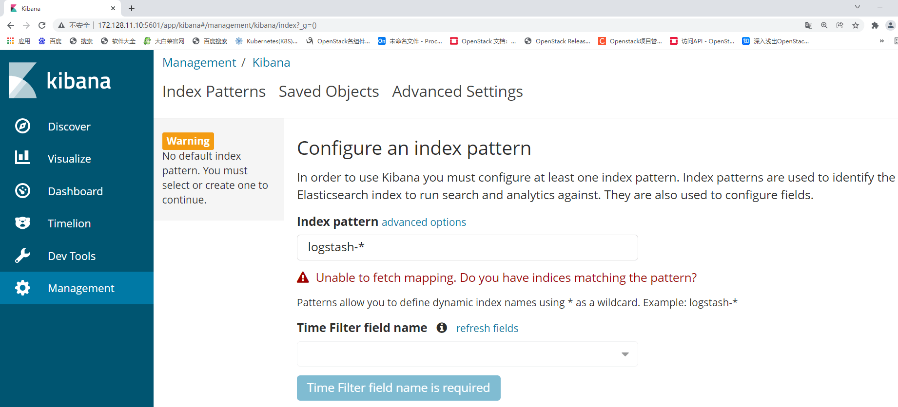
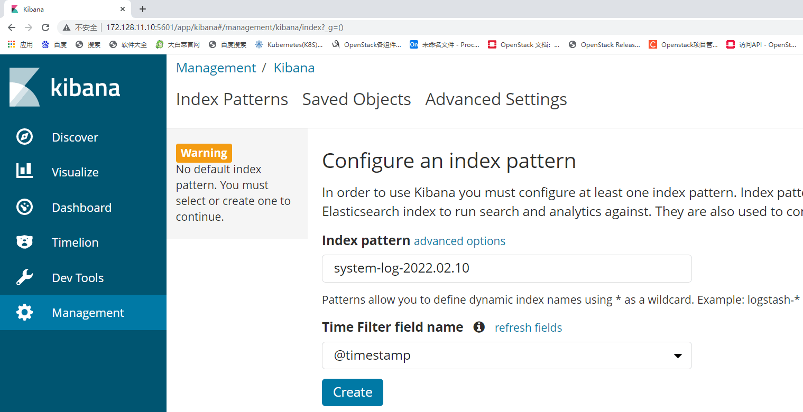
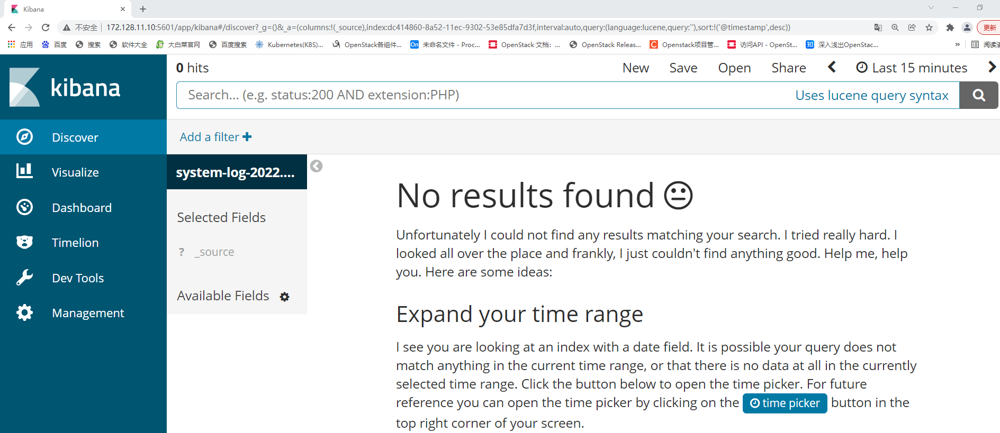
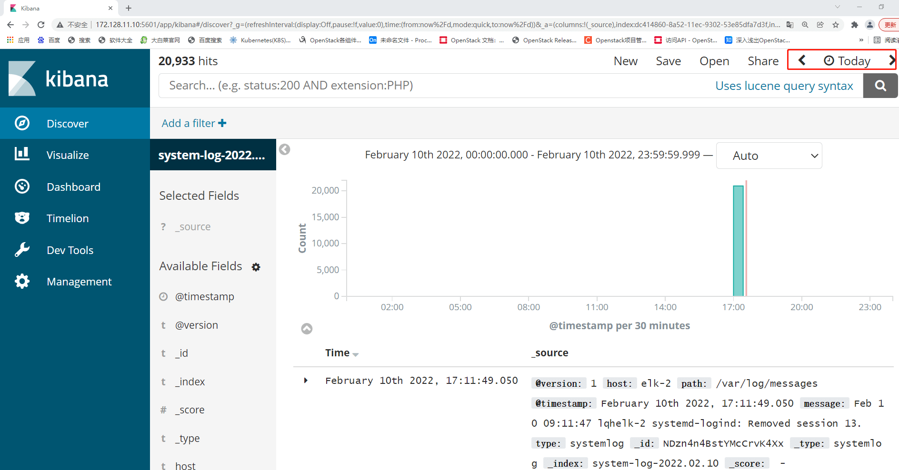

案例描述 本案例讲述如何使用OpenStack平台的云主机来部署ELK服务，具体案例描述如下：
（1）Elasticsearch集群安装、elasticsearch.yml文件配置、Elasticsearch集群健康状态检查。
（2）Kibana服务安装、kibana.yml文件配置、测试访问Kibana页面。
（3）Logstash服务安装、logstash.yml文件配置、配置logstash收集syslog日志。
（4）Kibana检索日志信息、Kibana页面配置日志检索信息、验证日志检索是否成功。
规划节点 节点规划见表1。
表1 节点规划
IP 主机名 节点
172.128.11.10
elk-1
Elasticsearch/Kibana
172.128.11.17
elk-2
Elasticsearch/Logstash
172.128.11.11
elk-3
Elasticsearch
基础准备 登录物理OpenStack平台，使用CentOS7.9镜像创建三台云主机，云主机类型使用2VCPU/4GB内存/50GB硬盘。创建后的云主机作为本次案例的实验节点。
案例实施 ELK日志分析系统 ELK指的是Elasticsearch+Logstash+Kibana这种架构的缩写。
ELK是一种日志分析平台，在很早之前我们经常使用Shell三剑客（一般泛指grep、sed、awk）来进行日志分析，这种方式虽然也可以应对多种场景，但是当日志量大、分析频率高，并且在结合用户不会使用Shell的情况下，这种方法就很不受欢迎。这时候就运营而出了一种新型的日志分析系统，那就是ELK，它的配置方便、使用简单，同时它的分析结果可以使用户能够更加直观的看出分析出来的结果。
一个完整的集中式日志系统，需要包含以下几个主要特点：
● 收集－能够采集多种来源的日志数据；
● 传输－能够稳定的把日志数据传输到中央系统；
● 存储－如何存储日志数据；
● 分析－可以支持 UI 分析；
● 警告－能够提供错误报告，监控机制；
而ELK则提供一整套的解决方案，并且都是开源软件，之间相互配合，完美衔接，高效的满足了很多场合的应用。
（1）Elasticsearch服务
Elasticsearch是一款开源的、分布式、高扩展并且高实时的搜索与数据分析引擎，它提供了一个分布式多用户能力的全文搜索引擎，基于RESTful Web接口。Elasticsearch是使用Java语言开发的，他能很方便的使大量数据具有搜索、分析和探索的能力。充分利用Elasticsearch的水平伸缩性，能使数据在生产环境变得更有价值。
Elasticsearch使用Lucene（全文检索引擎工具包），并试图通过JSON和Java API提供其所有特性。它支持facetting和percolating，如果新文档与注册查询匹配，这对于通知非常有用。另一个特性称为“网关”，处理索引的长期持久性；例如，在服务器崩溃的情况下，可以从网关恢复索引。Elasticsearch支持实时GET请求，适合作为NoSQL数据存储，但缺少分布式事务。
（2）Logstash服务
Logstash经常用于日志系统中做日志采集设备，最常用于ELK中作为日志搜集器使用。
简单的来说Logstash是具有实时流水线能力的开源的数据搜索引擎。它可以去动态的统一不同来源的数据，并将数据标准化到用户选择的目标输出。它提供了大量的插件，可以帮助我们解析、丰富、转换和缓冲任何类型的数据。Logstash大概分为三个部分，分别是Inputs（输入阶段）、Filters（过滤器阶段）、Outputs（输出阶段）。
Inputs（输入阶段）：会生成时间，采集各种样式，大小和相关来源数据，负责从各个服务器中收集数据。
Filters（过滤器阶段）：它可以将过滤器和条件语句结合使用对事件进行处理包括：grok、mutate等。
Outputs（输出阶段）：将事件数据发送到特定的目标，完成了输出处理，该事件就完成了执行。如：elasticsearch、file等。
以上三个部分除了Filter是可选之外，其他两个部分都是必须的。
（3）Kibana服务
Kibana也是一个开源的分析与可视化平台，常和Elasticsearch搭配使用。用户可以用kibana搜索、查看存放在Elasticsearch中的数据。Kibana与Elasticsearch的交互方式是各种不同的图表、表格、地图等，直观的展示数据，从而达到高级的数据分析与可视化的目的。
ELK常见架构 Elasticsearch+Logstash+Kibana：这种架构是最常见的一种，也是最简单的一种架构，这种架构通过Logstash收集日志，运用Elasticsearch分析日志，最后通过Kibana中展示日志信息。
Elasticsearch+Logstash+Filebeat+Kibana：在这种架构中增加了一个Filebeat模块。这个模块在上面的内容中没有对它详细介绍，它是一款轻量的日志收集代理，用来部署在客户端当中，这个服务较Logstash来说能够节省资源，一般在生产环境中大多采用这种架构，但是这种架构有一个弊端，那就是当Logstash出现故障后，则会造成日志的丢失。
Elasticsearch+Logstash+filebeat+redis（及其他中间件）+Kibana：这种架构等于是上面第二种的完善，通过增加中间件来去避免数据丢失，当Logstash出现故障后，日志依旧留存在中间件内，当Logstash再次启动，则会读取中间件中积压的日志。
基础环境配置 （1）三台主机修改主机名
elk-1节点：
1 2 3 4 5 6 7 8 9 10 11 12 13 [root@lqhelk-1 ~]# hostnamectl set-hostname elk-1 [root@lqhelk-1 ~]# bash [root@elk-1 ~]# hostnamectl Static hostname: elk-1 Icon name: computer-vm Chassis: vm Machine ID: cc2c86fe566741e6a2ff6d399c5d5daa Boot ID: 4786f596058f424db58406c8c1b9c635 Virtualization: kvm Operating System: CentOS Linux 7 (Core) CPE OS Name: cpe:/o:centos:centos:7 Kernel: Linux 3.10.0-1160.el7.x86_64 Architecture: x86-64
elk-2节点：
1 2 3 4 5 6 7 8 9 10 11 12 [root@lqhelk-2 ~]# hostnamectl set-hostname elk-2 [root@elk-2 ~]# hostnamectl Static hostname: elk-2 Icon name: computer-vm Chassis: vm Machine ID: cc2c86fe566741e6a2ff6d399c5d5daa Boot ID: 17e276b0811d4a01907ab8424a16a072 Virtualization: kvm Operating System: CentOS Linux 7 (Core) CPE OS Name: cpe:/o:centos:centos:7 Kernel: Linux 3.10.0-1160.el7.x86_64 Architecture: x86-64
elk-3节点：
1 2 3 4 5 6 7 8 9 10 11 12 13 [root@lqhelk-3 ~]# hostnamectl set-hostname elk-3 [root@lqhelk-3 ~]# bash [root@elk-3 ~]# hostnamectl Static hostname: elk-3 Icon name: computer-vm Chassis: vm Machine ID: cc2c86fe566741e6a2ff6d399c5d5daa Boot ID: 07d416916e744daa8a96163a93fcf34a Virtualization: kvm Operating System: CentOS Linux 7 (Core) CPE OS Name: cpe:/o:centos:centos:7 Kernel: Linux 3.10.0-1160.el7.x86_64 Architecture: x86-64
（2）三台主机配置主机名映射（以第一台节点为例，三个节点都要配置）
1 2 3 4 5 6 [root@elk-1 ~]# vi /etc/hosts 127.0.0.1 localhost localhost.localdomain localhost4 localhost4.localdomain4 ::1 localhost localhost.localdomain localhost6 localhost6.localdomain6 172.128.11.10 elk-1 172.128.11.17 elk-2 172.128.11.11 elk-3
（3）三台主机安装JDK环境（以第一台节点为例）
使用CentOS7.9镜像配置YUM源，部署ELK环境需要jdk1.8以上的JDK版本软件环境，我们本次实验使用的是opnejdk1.8，可直接使用本地源进行安装。
1 2 3 4 5 6 7 8 9 10 11 12 13 14 15 16 17 18 19 20 21 22 23 24 25 26 27 [root@elk-1 ~]# curl -O http://mirrors.douxuedu.com/competition/CentOS-7-x86_64-DVD-2009.iso [root@elk-1 ~]# mv /etc/yum.repos.d/* /media/ [root@elk-1 ~]# mkdir /opt/centos-2009 [root@elk-1 ~]# vi /etc/yum.repos.d/local.repo [centos] name=centos baseurl=file:///opt/centos-2009 gpgcheck=0 enabled=1 [root@elk-1 ~]# mount CentOS-7-x86_64-DVD-2009.iso /mnt/ mount: /dev/loop0 is write-protected, mounting read-only [root@elk-1 ~]# cp -rvf /mnt/* /opt/centos-2009 [root@elk-1 ~]# umount /mnt/ [root@elk-1 ~]# yum install -y java-1.8.0-openjdk java-1.8.0-openjdk-devel ...... Installed: java-1.8.0-openjdk.x86_64 1:1.8.0.262.b10-1.el7 java-1.8.0-openjdk-devel.x86_64 1:1.8.0.262.b10-1.el7 Dependency Installed: alsa-lib.x86_64 0:1.1.8-1.el7 atk.x86_64 0:2.28.1-2.el7 avahi-libs.x86_64 0:0.6.31-20.el7 cairo.x86_64 0:1.15.12-4.el Complete! [root@elk-1 ~]# java -version openjdk version "1.8.0_262" OpenJDK Runtime Environment (build 1.8.0_262-b10) OpenJDK 64-Bit Server VM (build 25.262-b10, mixed mode)
部署Elasticserach （1）三台主机安装Elasticserach（以第一台主机为例）
将提供的elasticsearch-6.0.0.rpm包分别上传至三台主机的/root目录下，并使用命令进行安装。
1 2 3 4 5 6 7 8 9 10 11 12 13 14 15 16 17 [root@elk-1 ~]# ll total 27332 -rw-------. 1 root root 6880 Oct 30 2020 anaconda-ks.cfg -rw-r--r--. 1 root root 27970243 Nov 27 02:52 elasticsearch-6.0.0.rpm -rw-------. 1 root root 6587 Oct 30 2020 original-ks.cfg [root@elk-1 ~]# rpm -ivh elasticsearch-6.0.0.rpm warning: elasticsearch-6.0.0.rpm: Header V4 RSA/SHA512 Signature, key ID d88e42b4: NOKEY Preparing... ################################# [100%] Creating elasticsearch group... OK Creating elasticsearch user... OK Updating / installing... 1:elasticsearch-0:6.0.0-1 ################################# [100%] # sudo systemctl daemon-reload sudo systemctl enable elasticsearch.service # sudo systemctl start elasticsearch.service
（2）三台主机分别配置Elasticserach
配置elasticsearch的配置文件，配置文件在/etc/elasticsearch/elasticsearch.yml。
elk-1节点：
1 2 3 4 5 6 7 8 9 10 11 12 13 14 15 16 17 18 19 20 21 22 23 24 25 26 27 28 29 30 31 32 33 34 35 36 37 38 39 [root@elk-1 ~]# vi /etc/elasticsearch/elasticsearch.yml # ---------------------------------- Cluster ----------------------------------- # # cluster.name: ELK //取消注释，配置elasticsearch集群名称 # # # node.name: elk-1 //配置节点名，默认随机指定一个name列表中名字，该列表在Elasticserach的jar包中config文件夹里name.txt文件中 node.master: true //添加指定该节点是否有资格被选举成为node node.data: false //指定该节点是否有资格被选举成为node，Elasticserach是默认集群中的第一台机器为master，如果这台机挂了就会重新选举master，其他两节点为false。 # ----------------------------------- Paths ------------------------------------ # # path.data: /var/lib/elasticsearch //配置索引数据存储位置(保持默认,不要开启注释)。 # # path.logs: /var/log/elasticsearch //设置日志文件的存储路径，默认是Elasticserach根目录下的logs文件夹。 # ---------------------------------- Network ----------------------------------- # # network.host: 172.128.11.10 //设置绑定的ip地址，可以是ipv4或ipv6的，默认为0.0.0.0。 # # http.port: 9200 //启动的Elasticserach对外访问的http端口，默认9200 # --------------------------------- Discovery ---------------------------------- # # The default list of hosts is ["127.0.0.1" , "[::1]" ] # discovery.zen.ping.unicast.hosts: ["elk-1","elk-2","elk-3"] //设置集群中master节点的初始列表，可以通过这些节点来自动发现新加入集群的节点。
elk-2节点（参数说明不再详细写出）：
1 2 3 4 5 6 7 8 9 10 11 12 13 14 15 16 17 18 19 20 21 22 23 24 25 26 27 28 29 30 31 32 33 34 35 36 37 38 39 [root@elk-2 ~]# vi /etc/elasticsearch/elasticsearch.yml # ---------------------------------- Cluster ----------------------------------- # # cluster.name: ELK # # # node.name: elk-2 node.master: false node.data: true # ----------------------------------- Paths ------------------------------------ # # path.data: /var/lib/elasticsearch # # path.logs: /var/log/elasticsearch。 # ---------------------------------- Network ----------------------------------- # # network.host: 172.128.11.17 # # http.port: 9200 # --------------------------------- Discovery ---------------------------------- # # The default list of hosts is ["127.0.0.1" , "[::1]" ] # discovery.zen.ping.unicast.hosts: ["elk-1","elk-2","elk-3"]
elk-3节点（参数说明不再详细写出）：
1 2 3 4 5 6 7 8 9 10 11 12 13 14 15 16 17 18 19 20 21 22 23 24 25 26 27 28 29 30 31 32 33 34 35 36 37 38 39 [root@elk-3 ~]# vi /etc/elasticsearch/elasticsearch.yml # ---------------------------------- Cluster ----------------------------------- # # cluster.name: ELK # # # node.name: elk-3 node.master: false node.data: true # ----------------------------------- Paths ------------------------------------ # # path.data: /var/lib/elasticsearch # # path.logs: /var/log/elasticsearch。 # ---------------------------------- Network ----------------------------------- # # network.host: 172.128.11.11 # # http.port: 9200 # --------------------------------- Discovery ---------------------------------- # # The default list of hosts is ["127.0.0.1" , "[::1]" ] # discovery.zen.ping.unicast.hosts: ["elk-1","elk-2","elk-3"]
（3）三台主机启动服务（以第一台节点为例）
使用命令启动服务，并设置开机自启，最后使用命令查看进行及端口号。
1 2 3 4 5 6 7 8 9 10 11 12 13 14 15 16 17 [root@elk-1 ~]# systemctl start elasticsearch [root@elk-1 ~]# systemctl enable elasticsearch Created symlink from /etc/systemd/system/multi-user.target.wants/elasticsearch.service to /usr/lib/systemd/system/elasticsearch.service. [root@elk-1 ~]# ps -ef |grep elasticsearch elastic+ 15943 1 90 07:46 ? 00:00:11 /bin/java -Xms1g -Xmx1g -XX:+UseConcMarkSweepGC -XX:CMSInitiatingOccupancyFraction=75 -XX:+UseCMSInitiatingOccupancyOnly -XX:+AlwaysPreTouch -server -Xss1m -Djava.awt.headless=true -Dfile.encoding=UTF-8 -Djna.nosys=true -XX:-OmitStackTraceInFastThrow -Dio.netty.noUnsafe=true -Dio.netty.noKeySetOptimization=true -Dio.netty.recycler.maxCapacityPerThread=0 -Dlog4j.shutdownHookEnabled=false -Dlog4j2.disable.jmx=true -XX:+HeapDumpOnOutOfMemoryError -XX:HeapDumpPath=/var/lib/elasticsearch -Des.path.home=/usr/share/elasticsearch -Des.path.conf=/etc/elasticsearch -cp /usr/share/elasticsearch/lib/* org.elasticsearch.bootstrap.Elasticsearch -p /var/run/elasticsearch/elasticsearch.pid --quiet root 16023 15676 0 07:47 pts/0 00:00:00 grep --color=auto elasticsearch [root@elk-1 ~]# netstat -ntpl Active Internet connections (only servers) Proto Recv-Q Send-Q Local Address Foreign Address State PID/Program name tcp 0 0 0.0.0.0:22 0.0.0.0:* LISTEN 1268/sshd tcp 0 0 127.0.0.1:25 0.0.0.0:* LISTEN 1139/master tcp 0 0 0.0.0.0:111 0.0.0.0:* LISTEN 565/rpcbind tcp6 0 0 172.128.11.10:9300 :::* LISTEN 15943/java tcp6 0 0 :::22 :::* LISTEN 1268/sshd tcp6 0 0 ::1:25 :::* LISTEN 1139/master tcp6 0 0 :::111 :::* LISTEN 565/rpcbind tcp6 0 0 172.128.11.10:9200 :::* LISTEN 15943/java
三台主机如果有进程存在或者能够发现9200和9300端口暴露，则服务启动成功。
（4）检查集群状态
elk-1节点：
1 2 3 4 5 6 7 8 9 10 11 12 13 14 15 16 17 18 [root@elk-1 ~]# curl '172.128.11.10:9200/_cluster/health?pretty' { "cluster_name" : "ELK", //集群名称 "status" : "green", //集群健康状态，green为健康，yellow或者red则是集群有问题 "timed_out" : false //是否超时, "number_of_nodes" : 3, //集群中节点数 "number_of_data_nodes" : 2, //集群中data节点数量 "active_primary_shards" : 0, "active_shards" : 0, "relocating_shards" : 0, "initializing_shards" : 0, "unassigned_shards" : 0, "delayed_unassigned_shards" : 0, "number_of_pending_tasks" : 0, "number_of_in_flight_fetch" : 0, "task_max_waiting_in_queue_millis" : 0, "active_shards_percent_as_number" : 100.0 }
部署Kibana （1）第一台主机安装kibana
将提供的kibana-6.0.0-x86_64.rpm包上传至第一台主机的/root目录下，其他主机无需上传，并使用命令进行安装。
1 2 3 4 5 [root@elk-1 ~]# rpm -ivh kibana-6.0.0-x86_64.rpm warning: kibana-6.0.0-x86_64.rpm: Header V4 RSA/SHA512 Signature, key ID d88e42b4: NOKEY Preparing... ################################# [100%] Updating / installing... 1:kibana-6.0.0-1 ################################# [100%]
（2）配置Kibana
配置kibana的配置文件，配置文件在/etc/kibana/kibana.yml，在配置文件增加或修改以下内容：
1 2 3 4 [root@elk-1 ~]# cat /etc/kibana/kibana.yml |grep -v ^# server.port: 5601 server.host: 172.128.11.10 elasticsearch.url: "http://172.128.11.10:9200"
（3）启动Kibana
1 2 3 4 5 6 7 8 9 10 11 12 13 14 15 16 17 18 [root@elk-1 ~]# systemctl start kibana [root@elk-1 ~]# systemctl enable kibana Created symlink from /etc/systemd/system/multi-user.target.wants/kibana.service to /etc/systemd/system/kibana.service. [root@elk-1 ~]# ps -ef |grep kibana kibana 16141 1 9 08:26 ? 00:00:03 /usr/share/kibana/bin/../node/bin/node --no-warnings /usr/share/kibana/bin/../src/cli -c /etc/kibana/kibana.yml root 16192 15676 0 08:27 pts/0 00:00:00 grep --color=auto kibana [root@elk-1 ~]# netstat -ntpl Active Internet connections (only servers) Proto Recv-Q Send-Q Local Address Foreign Address State PID/Program name tcp 0 0 0.0.0.0:22 0.0.0.0:* LISTEN 1268/sshd tcp 0 0 127.0.0.1:25 0.0.0.0:* LISTEN 1139/master tcp 0 0 172.128.11.10:5601 0.0.0.0:* LISTEN 16141/node tcp 0 0 0.0.0.0:111 0.0.0.0:* LISTEN 565/rpcbind tcp6 0 0 172.128.11.10:9300 :::* LISTEN 15943/java tcp6 0 0 :::22 :::* LISTEN 1268/sshd tcp6 0 0 ::1:25 :::* LISTEN 1139/master tcp6 0 0 :::111 :::* LISTEN 565/rpcbind tcp6 0 0 172.128.11.10:9200 :::* LISTEN 15943/java
启动后如果有进程或者能够发现5601端口暴露则服务启动成功，并可以通过浏览器访问地址http://172.128.11.10:5601/，能够看到如图1所示页面。

图1 浏览器访问地址
部署Logstash （1）安装Logstash
将提供的logstash-6.0.0.rpm包上传到第二台主机的/root目录下，其他主机无需上传，并使用命令进行安装。
1 2 3 4 5 6 7 8 9 10 11 12 13 [root@elk-2 ~]# ll total 137968 -rw-------. 1 root root 6880 Oct 30 2020 anaconda-ks.cfg -rw-r--r--. 1 root root 27970243 Feb 10 07:06 elasticsearch-6.0.0.rpm -rw-r--r--. 1 root root 113288712 Feb 10 08:49 logstash-6.0.0.rpm -rw-------. 1 root root 6587 Oct 30 2020 original-ks.cfg [root@elk-2 ~]# rpm -ivh logstash-6.0.0.rpm warning: logstash-6.0.0.rpm: Header V4 RSA/SHA512 Signature, key ID d88e42b4: NOKEY Preparing... ################################# [100%] Updating / installing... 1:logstash-1:6.0.0-1 ################################# [100%] Using provided startup.options file: /etc/logstash/startup.options Successfully created system startup script for Logstash
（2）配置Logstash
配置/etc/logstash/logstash.yml，修改增加第190行如下：
1 2 [root@elk-2 ~]# vi /etc/logstash/logstash.yml http.host: "172.128.11.17" //第二台主机名称
配置logstash收集syslog日志：
1 2 3 4 5 6 7 8 9 10 11 12 13 14 15 16 17 [root@elk-2 ~]# vi /etc/logstash/conf.d/syslog.conf input { file { path => "/var/log/messages" type => "systemlog" start_position => "beginning" stat_interval => "3" } } output { if [type] == "systemlog" { elasticsearch { hosts => ["172.128.11.10:9200"] //这里的地址为第一台主机地址 index => "system-log-%{+YYYY.MM.dd}" } } }
检测配置文件是否错误：
1 2 3 4 5 [root@elk-2 ~]# chmod 644 /var/log/messages //给这个文件赋权限，如果不给权限，则无法读取日志 [root@elk-2 ~]# ln -s /usr/share/logstash/bin/logstash /usr/bin [root@elk-2 ~]# logstash --path.settings /etc/logstash/ -f /etc/logstash/conf.d/syslog.conf --config.test_and_exit Sending Logstash's logs to /var/log/logstash which is now configured via log4j2.properties Configuration OK //结果显示OK则证明没问题
参数说明：
● –path.settings 用于指定logstash的配置文件所在的目录
● -f 指定需要被检测的配置文件的路径
● –config.test_and_exit 指定检测完之后就退出，不然就会直接启动了
（3）启动Logstash
1 2 3 4 5 6 7 8 9 10 11 12 13 14 15 [root@elk-2 ~]# systemctl start logstash [root@elk-2 ~]# ps -ef |grep logstash logstash 17891 1 99 09:06 ? 00:00:18 /bin/java -XX:+UseParNewGC -XX:+UseConcMarkSweepGC -XX:CMSInitiatingOccupancyFraction=75 -XX:+UseCMSInitiatingOccupancyOnly -XX:+DisableExplicitGC -Djava.awt.headless=true -Dfile.encoding=UTF-8 -XX:+HeapDumpOnOutOfMemoryError -Xmx1g -Xms256m -Xss2048k -Djffi.boot.library.path=/usr/share/logstash/vendor/jruby/lib/jni -Xbootclasspath/a:/usr/share/logstash/vendor/jruby/lib/jruby.jar -classpath : -Djruby.home=/usr/share/logstash/vendor/jruby -Djruby.lib=/usr/share/logstash/vendor/jruby/lib -Djruby.script=jruby -Djruby.shell=/bin/sh org.jruby.Main /usr/share/logstash/lib/bootstrap/environment.rb logstash/runner.rb --path.settings /etc/logstash root 17927 15677 0 09:06 pts/0 00:00:00 grep --color=auto logstash [root@elk-2 ~]# netstat -lnpt Active Internet connections (only servers) Proto Recv-Q Send-Q Local Address Foreign Address State PID/Program name tcp 0 0 0.0.0.0:22 0.0.0.0:* LISTEN 1273/sshd tcp 0 0 127.0.0.1:25 0.0.0.0:* LISTEN 1084/master tcp 0 0 0.0.0.0:111 0.0.0.0:* LISTEN 580/rpcbind tcp6 0 0 172.128.11.17:9200 :::* LISTEN 15918/java tcp6 0 0 172.128.11.17:9300 :::* LISTEN 15918/java tcp6 0 0 :::22 :::* LISTEN 1273/sshd tcp6 0 0 ::1:25 :::* LISTEN 1084/master tcp6 0 0 :::111 :::* LISTEN 580/rpcbind
如果启动服务后，有进程但是没有9600端口，是因为权限问题，之前我们以root的身份在终端启动过logstash，所以产生的相关文件的属组属主都是root，解决方法如下：
1 2 3 4 5 6 7 8 9 10 11 12 13 14 15 16 17 18 19 20 21 22 [root@elk-2 ~]# ll /var/lib/logstash/ total 0 drwxr-xr-x. 2 root root 6 Feb 10 09:00 dead_letter_queue drwxr-xr-x. 2 root root 6 Feb 10 09:00 queue [root@elk-2 ~]# chown -R logstash /var/lib/logstash/ [root@elk-2 ~]# ll /var/lib/logstash/ total 0 drwxr-xr-x. 2 logstash root 6 Feb 10 09:00 dead_letter_queue drwxr-xr-x. 2 logstash root 6 Feb 10 09:00 queue [root@elk-2 ~]# systemctl restart logstash [root@elk-2 ~]# netstat -lnpt Active Internet connections (only servers) Proto Recv-Q Send-Q Local Address Foreign Address State PID/Program name tcp 0 0 0.0.0.0:22 0.0.0.0:* LISTEN 1273/sshd tcp 0 0 127.0.0.1:25 0.0.0.0:* LISTEN 1084/master tcp 0 0 0.0.0.0:111 0.0.0.0:* LISTEN 580/rpcbind tcp6 0 0 172.128.11.17:9200 :::* LISTEN 15918/java tcp6 0 0 172.128.11.17:9300 :::* LISTEN 15918/java tcp6 0 0 :::22 :::* LISTEN 1273/sshd tcp6 0 0 ::1:25 :::* LISTEN 1084/master tcp6 0 0 172.128.11.17:9600 :::* LISTEN 18724/java tcp6 0 0 :::111 :::* LISTEN 580/rpcbind
启动完毕后，让syslog产生日志，用第三台主机登录elk-2机器，登录后退出。
1 2 3 4 5 6 7 8 9 10 11 [root@elk-3 ~]# ssh elk-2 The authenticity of host 'elk-2 (172.128.11.17)' can't be established. ECDSA key fingerprint is SHA256:nJT1L6Cz5MvNxC/ib2Rk+WN6Q/a3E3yi/67VwVOjt5k. ECDSA key fingerprint is MD5:10:0c:b0:88:e6:03:76:cb:53:0b:ea:97:5e:b7:8f:10. Are you sure you want to continue connecting (yes/no)? yes Warning: Permanently added 'elk-2,172.128.11.17' (ECDSA) to the list of known hosts. root@elk-2's password: Last login: Thu Feb 10 01:34:28 2022 from 192.168.0.112 [root@elk-2 ~]# [root@elk-2 ~]# logout Connection to elk-2 closed.
Kibana检索日志 （1）Kibana上查看日志
之前部署kibana完成后，还没有检索日志。现在logstash部署完成，我们回到第一台主机上查看日志索引，执行命令如下：
1 2 3 4 [root@elk-1 ~]# curl '172.128.11.17:9200/_cat/indices?v' health status index uuid pri rep docs.count docs.deleted store.size pri.store.size green open system-log-2022.02.10 E6kpwHcdRmy8iO42S3zlTg 5 1 20933 0 7.9mb 3.9mb green open .kibana OdfKD6JFTx-pPwfJNZtpLA 1 1 1 0 7.3kb 3.6kb
获取\删除指定索引详细信息：
1 2 3 4 5 6 7 8 9 10 11 12 13 14 15 16 17 18 19 20 21 22 23 24 25 26 27 28 29 30 31 32 33 34 35 36 37 38 39 40 41 42 43 44 45 46 47 48 49 50 51 52 53 54 55 56 57 58 59 60 61 62 63 64 65 66 67 68 69 70 71 72 [root@elk-1 ~]# curl -XGET/DELETE '172.128.11.17:9200/system-log-2022.02.10?pretty' //此处的system-log-2022.02.10是上面步骤查看出的日志索引名称 { "system-log-2022.02.10" : { "aliases" : { }, "mappings" : { "systemlog" : { "properties" : { "@timestamp" : { "type" : "date" }, "@version" : { "type" : "text", "fields" : { "keyword" : { "type" : "keyword", "ignore_above" : 256 } } }, "host" : { "type" : "text", "fields" : { "keyword" : { "type" : "keyword", "ignore_above" : 256 } } }, "message" : { "type" : "text", "fields" : { "keyword" : { "type" : "keyword", "ignore_above" : 256 } } }, "path" : { "type" : "text", "fields" : { "keyword" : { "type" : "keyword", "ignore_above" : 256 } } }, "type" : { "type" : "text", "fields" : { "keyword" : { "type" : "keyword", "ignore_above" : 256 } } } } } }, "settings" : { "index" : { "creation_date" : "1644484128903", "number_of_shards" : "5", "number_of_replicas" : "1", "uuid" : "E6kpwHcdRmy8iO42S3zlTg", "version" : { "created" : "6000099" }, "provided_name" : "system-log-2022.02.10" } } } }
（2）Web页面配置
浏览器访问172.128.11.10:5601，到kibana上配置，索引的目录为:system-log-2022.02.10，修改完成后点击“Create”按钮，如图2所示。

图2 浏览器访问页面
配置完成后，点击左上角的“Discover”，进入“Discover”页面后如果出现以下提示，则是代表无法查找到日志信息，如图3所示。

图3 进入Discover页面
这种情况一般是时间的问题，可以点击右上角切换成查看当天的日志信息，如图4所示。

图4 查看当天的日志信息
更改完成后，可以看到，Kibana服务已经成功检索主机的日志信息，并反馈在页面。